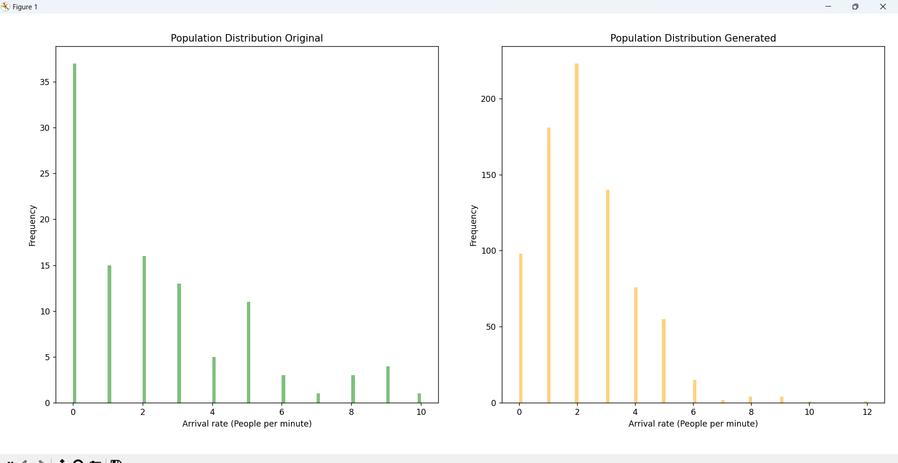
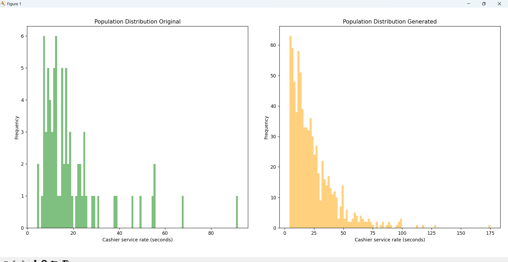

Simulation und Analyse der Leistung der Universitätskantine:
Warteschlangenmodell für den Durchfluss durch die Universitätskantine, die Identifizierung von Engpässen und der
Vorschlag von Lösungen zur Optimierung der Durchlaufzeiten.
Universitätskantinen spielen eine zentrale Rolle bei der Unterstützung von Studierenden, indem sie
zuverlässige Verpflegung und einen Ort für soziale Interaktion bieten. Allerdings führt die Hektik in
diesen Kantinen oft zu Herausforderungen bei der effizienten Steuerung des Kundenstroms, was zu langen
Warteschlangen, verlängerten Servicezeiten und insgesamt zu einer suboptimalen Erfahrung führt.
Da ich die Notwendigkeit erkannte, diese Probleme anzugehen, beteiligte ich mich als Masterstudent an einem
Team, das sich mit der Entwicklung von Warteschlangenmodellen zur Steigerung der Effizienz von
Universitätskantinen befasste.
Unter der Aufsicht der Fakultät hatten wir die Aufgabe, ein Warteschlangenmodell zu simulieren, um die
Betriebsdynamik unserer Universitätskantine nachzubilden. Dieses Vorhaben sollte uns helfen, den gesamten
Warteschlangenprozess besser zu verstehen – vom Moment der Ankunft eines Studenten am Kantinen-Schalter bis
zum Abschluss seiner Zahlung.
Die Ziele dieses Simulationsprojekts waren zweierlei: erstens, tiefere Einblicke in die komplexen
Interaktionen zwischen Kunden, Dienstleistern und verfügbaren Ressourcen zu gewinnen; und zweitens,
potenzielle Engpässe innerhalb des bestehenden Systems zu identifizieren.
Dieses Projekt untersucht die verwendeten Methoden, die Bedeutung der Warteschlangentheorie – einem
etablierten Teilgebiet der Operations Research – und ihre Anwendung im Kontext von Universitätsmensen. Wir
diskutieren auch die Herausforderungen, die während des Simulationsprozesses auftraten, die wichtigsten
Ergebnisse der Analyse und die vorgeschlagenen Lösungen zur Beseitigung der identifizierten Engpässe.
Durch die Veröffentlichung dieser Forschungsergebnisse möchten wir eine breitere Diskussion über die
praktischen Anwendungen von Warteschlangenmodellen in realen Szenarien anregen und effektive Lösungen zur
Steigerung der Kapazität, Verkürzung der Servicezeiten und letztendlich zur Optimierung der gesamten
Kundenvorlaufzeit vorstellen.
SCHRITT 1: Verständnis der Industrie
I. Warteschlangentheorie:
Das Universitätskantinenprojekt weist mehrere Gemeinsamkeiten mit der Warteschlangentheorie auf, einem
mathematischen Rahmenwerk, das zur Modellierung von warteschlangenbasierten Dienstleistungsumgebungen wie
Convenience-Stores, Restaurants oder Notfalldiensten sowie in Geschäftsbereichen wie Telekommunikation,
Logistik und Bankwesen verwendet wird.
Die Warteschlangentheorie hilft bei der Optimierung der Ressourcenzuweisung und der Verbesserung des
Kundenservice, indem sie durch die Berechnung des Auslastungsfaktors für jede Station Engpässe
identifiziert.
II. Datengenerierung:
Ein weiterer wichtiger Bestandteil dieses Projekts ist die Generierung von Daten für Simulationsmodelle.
Die Datengenerierung ist entscheidend für die Definition von Wahrscheinlichkeitsverteilungen für
Eingabevariablen wie Ankunftsraten und Servicezeiten. Mithilfe der Monte-Carlo-Simulation haben wir große
Mengen von Zufallsstichproben generiert, um verschiedene Szenarien innerhalb des Warteschlangensystems zu
simulieren.
Key Performance Indicators (KPI) konzentrierten sich auf den betrieblichen Mehrwert für die Mensa,
wobei insbesondere die Kapazität, die Durchlaufzeiten und der Auslastungsfaktor jeder Servicestation im
Vordergrund standen.
SCHRITT 2: Verständnis der Daten
Wie bei jedem Warteschlangenmodell kommen die Kunden nach einem bestimmten Ankunftsprozess zum System, der
in der Regel anhand von Poisson- oder Exponentialverteilungen modelliert wird. Bei der Ankunft wird der
Kunde, sofern ein Server verfügbar ist, sofort bedient und begibt sich dann zur nächsten Station, um die
Zahlung abzuschließen.
Um das Warteschlangensystem der Kantine genau darzustellen, haben wir die folgenden Kundenzustände
berücksichtigt: Ankunft in der Kantine, Interaktion mit dem Kantinenpersonal, um Essen zu bestellen und zu
erhalten (erste Servicestation), und Bezahlung an der Kasse (zweite Servicestation).
Um dieses System zu simulieren, haben wir eine Markov-Kette angewendet – ein stochastisches Modell, das aus
definierten Zuständen und Übergangswahrscheinlichkeiten zwischen diesen besteht.
Markov-Warteschlangenprozesse ermöglichen die Simulation und Analyse des Systemverhaltens unter
verschiedenen Bedingungen und funktionieren ohne Speicher (zukünftige Zustände werden nicht von vergangenen
Ereignissen beeinflusst).
In der Warteschlangentheorie wird die Kendall-Notation verwendet, um Warteschlangenknoten zu beschreiben
und zu klassifizieren. In unserem Fall wird das System als M/M/1/1/∞/∞/FIFO dargestellt, was einen
Markovschen Ankunftsprozess und Servicezeiten, einen Server pro Station, unbegrenzte
Warteschlangenkapazität und eine First-in-First-out-Servicedisziplin bezeichnet.
SCHRITT 3: Aufbereitung der Daten
Auf Grundlage der Erkenntnisse aus der Datenanalysephase haben wir die wichtigsten Elemente des
Warteschlangensystems identifiziert. Diese wurden manuell durch direkte Besuche in der
Universitätscafeteria erfasst, bei denen wir wichtige Details wie Spitzenzeiten, zu denen die
Kundennachfrage am höchsten war, beobachtet und aufgezeichnet haben.
Nachdem ausreichend Daten zu Ankunftsraten und Servicezeiten gesammelt worden waren, haben wir
Chi-Quadrat-Tests durchgeführt, um zu bewerten, wie gut die beobachteten Daten einer Poisson-Verteilung
entsprechen. Mit zunehmendem Umfang der gesammelten Daten stieg auch der p-Wert des Chi-Quadrat-Tests. Nach
der Erfassung von etwa 150 Datenpunkten haben wir mit dem Prozess der Datengenerierung fortgefahren.
HINWEIS: Um Konsistenz zu gewährleisten und Beobachterverzerrungen zu minimieren, wurden die Daten
über mehrere Tage und Zeitfenster hinweg gesammelt, wobei Wochenenden ausgeschlossen wurden.
Nach Abschluss der Datenerfassung haben wir eine Monte-Carlo-Simulation durchgeführt, um auf der Grundlage
der beobachteten Datensätze zusätzliche Datenpunkte zu generieren. Durch die Analyse der Verteilung der
Ankunftsraten und Servicezeiten habe ich zwei separate Funktionen zur Datengenerierung entwickelt – eine
für Poisson-verteilte Ankunftsraten und eine für exponentiell verteilte Servicezeiten. Diese Funktionen
generierten bis zu 700 neue Datenpunkte, die die Eigenschaften der ursprünglichen Datenverteilungen
nachbildeten.
Durch die Definition von Wahrscheinlichkeitsverteilungen für Eingabevariablen wie Ankunftsraten und
Servicezeiten und die Anwendung der Monte-Carlo-Simulation konnten wir eine Vielzahl von Szenarien
simulieren. Diese Szenarien ermöglichten die Schätzung wichtiger Leistungsindikatoren, darunter
durchschnittliche Wartezeit, Warteschlangenlänge, Systemauslastung und die Wahrscheinlichkeit von
Verzögerungen.
Ein Vergleich zwischen den ursprünglichen Daten und den generierten Daten – basierend auf Mittelwerten und
Verteilungsmustern – bestätigte, dass die generierten Daten die statistischen Eigenschaften des
ursprünglichen Datensatzes beibehielten.

SCHRITT 4: Datenexploration und -visualisierung
Die Untersuchung der Datensätze zu Ankunftsraten und Servicezeiten lieferte erste Einblicke in das
Verhalten und die Leistung des Warteschlangensystems. In Warteschlangensystemen werden wichtige
Leistungskennzahlen wie Wartezeiten, Auslastungsfaktor und Durchlaufzeiten durch Datenauswertung abgeleitet
und sind für die Bewertung der Systemeffizienz von zentraler Bedeutung. Diese Leistungskennzahlen sind auch
nützlich für das Benchmarking verschiedener Personalszenarien oder Servicelayouts, die später getestet
werden könnten.
Mithilfe von Histogrammen und Boxplots konnten wir Schiefe, potenzielle Ausreißer und Clustering-Muster
innerhalb der Datensätze beobachten.

Wartezeit: Diese Kennzahl bezieht sich auf die Zeit, die ein Kunde in der Warteschlange verbringt,
bevor er bedient wird. Sie wird berechnet, indem die Differenz zwischen der Ankunftszeit und dem Beginn der
Bedienung gemessen wird.
Durchlaufzeit: Die Durchlaufzeit erfasst die Gesamtzeit, die ein Kunde im System verbringt, von der
Ankunft bis zum Abschluss der Bedienung. Sie umfasst sowohl die Wartezeit als auch die Bedienungszeit und
wird durch Verfolgung der gesamten Customer Journey berechnet.
Auslastungsfaktor: Der Auslastungsfaktor gibt den Prozentsatz der Zeit an, in der Servicestationen
(Server) Kunden aktiv bedienen, im Verhältnis zu ihrer Gesamtverfügbarkeit. Er ist ein wichtiger Indikator
für die Kapazität und Effizienz des Systems.
SCHRITT 5: Entwicklung von Merkmalen
Um diese Leistungskennzahlen in einem Simulationsmodell genau zu berechnen, müssen präzise Zeitstempel für
die Ankunft der Kunden, den Beginn der Dienstleistung, das Ende der Dienstleistung und die Abreise erfasst
werden. In unserem Simulationsmodell haben wir die folgenden Schlüsselelemente definiert: -->
'Kundennummer' -->'Ankunftsrate' --> 'Wartezeit vor der Kantine' --> 'Servicezeit Kantine' -->
'Wartezeit vor der Kasse' --> 'Servicezeit Kasse' --> 'Durchlaufzeit'
Durch die Verfolgung dieser Werte und die Anwendung geeigneter Algorithmen konnten wir die Wartezeiten,
Durchlaufzeiten und Auslastungsfaktoren berechnen, die für die Bewertung der Systemleistung und die
Ermittlung von Möglichkeiten zur Betriebsverbesserung erforderlich sind. Der Zweck dieser Funktionen
besteht nicht nur darin, die Kundenbewegungen durch das System zu verfolgen, sondern auch die
Rückverfolgbarkeit der Simulationsergebnisse zu gewährleisten.
# Python CODE: Berechnung des Nutzungsfaktors anhand des Durchschnittswerts des Datensatzes avg_arrival_rate = np.mean(new_arrival) / 60
avg_service_time_uno = new_order.mean()
avg_service_time_dos = new_cashier.mean()
client_data = pd.DataFrame(columns=['Client Number', 'Arrival Rate', 'Waiting time before Canteen',
'Service Time Canteen', "Waiting time before Cashier", "Service Time Cashier", "Lead Time"])
client_data["Waiting time before Canteen"] = (client_data["Waiting time before Canteen"] -
client_data["Service Time Canteen"]).abs()
client_data["Waiting time before Cashier"] = (client_data["Waiting time before Cashier"] -
client_data["Service Time Cashier"]).abs()
client_data["Lead Time"] = client_data[['Waiting time before Canteen', 'Service Time Canteen',
"Waiting time before Cashier", "Service Time Cashier", "Lead Time"]].sum(axis=1)
SCHRITT 6: Aufbau von Modellen
Für diese Simulation des Warteschlangensystems haben wir Python verwendet und die SimPy-Bibliothek
integriert, ein Paket für diskrete Ereignissimulationen (DES), das zur Modellierung des dynamischen
Prozessverhaltens und des Ressourcenmanagements entwickelt wurde. Mit SimPy konnten wir die
Kantinenumgebung nachbilden und simulieren, wie Ressourcen (Kantine und Kassen) mit ankommenden Kunden
interagieren.
Der Python-Code repliziert das Warteschlangenverhalten, indem er zufällig Werte aus den drei generierten
Datensätzen auswählt, die die inhärente Variabilität im täglichen Kantinenbetrieb widerspiegeln. Der
zufällige Auswahlprozess stellt sicher, dass jeder Simulationslauf eine andere Variation aufweist, was eine
bessere Belastungsprüfung des Systems ermöglicht.
Im Ankunftsprozess erhält die erste Station (Canteen) die Ankunftsintervalle von der Funktion
„arrival_process_stations“ und verarbeitet die Servicedauer über die Funktion ‚service_process_canteen‘.
Sobald die Anfrage eines Kunden abgeschlossen ist, wird sie an die zweite Station (CASHIER) weitergeleitet,
die mit der Funktion „service_process_cashier“ simuliert wird.
# Python CODE: Erstellen des Warteschlangenmodells env = simpy.Environment()
# Was ist simpy.Environment()? Innerhalb der SimPy-Bibliothek repräsentiert die Klasse „Environment“ die Umgebung, in der Ereignisse
auftreten und geplant werden, wobei sie wichtige Funktionen umfasst, die ausschließlich in der
SimPy-Bibliothek zu finden sind, wie Simulationszeit, Ereignisplanung und -bearbeitung, Prozessausführung
usw.
# Was ist simpy.Resource()? Innerhalb der SimPy-Bibliothek repräsentiert die Klasse „Resource“ die Kapazität einer Station, d. h.
wie viele Prozesse gleichzeitig ausgeführt werden können. Im Python-Code generieren Kunden
request(), um Zugriff auf die Ressource zu erhalten, und werden dann nach Abschluss der Aufgabe mit
release() freigegeben.
# Was ist simpy.Store()? Innerhalb der SimPy-Bibliothek repräsentiert die Klasse „Store“ die Warteschlangen, Puffer oder
Haltebereiche, in denen Simulationsprozesse Ereignisse ablegen, wenn die Klasse Resource() belegt
ist. Die Klasse Resource() ruft Ereignisse mithilfe der Funktion get() ab.
Ankunftsereignisse werden durch Stichproben von zufälligen Ankunftsratenwerten (gemessen in Ankunften pro
Minute) generiert, die in Intervallzeiten zwischen den Ankunftszeiten umgewandelt werden, um zu bestimmen,
wie lange das System wartet, bevor es den nächsten Kunden bedient.
Jeder neue Kunde erhält eine Kundennummer und wird mit der Methode put() zur Warteschlange der
Kantine (station_order) hinzugefügt. Die Kantinenstation verarbeitet Kunden über die Methode get()
und verfolgt dabei die Ankunftszeit des Kunden, die Wartezeit vor der Bedienung und die Verweildauer in der
Servicestation.
Die Kassierstation funktioniert ähnlich: Sie ruft den nächsten Kunden aus der Zwischenwarteschlange
(station_cashier) mit der Methode get() ab und zeichnet die Wartezeit vor der Kasse, die
Bearbeitungszeit und die Gesamtzeit an der Station auf.
Sobald der Kassiervorgang abgeschlossen ist, berechnet die Simulation die Durchlaufzeit für jeden Kunden.
Nach dem Simulationslauf werden systemweite Kennzahlen berechnet, darunter die Auslastungsfaktoren beider
Stationen und die Gesamtzahl der bedienten Kunden.
SCHRITT 7: Modelltraining und -bewertung
Um die Genauigkeit der Simulation zu beurteilen, haben wir den Auslastungsfaktor jeder Station anhand von
zwei Ansätzen berechnet: erstens durch Anwendung der durchschnittlichen Ankunfts- und Servicezeiten aus dem
Datensatz und zweitens durch manuelle Berechnung der Auslastung anhand der während der Simulation
aufgezeichneten Zeitstempel.
Ergebnisse aus dem Datensatz: + Auslastungsfaktor der CANTEEN-Station: 1.4912927763838917
+ Auslastungsfaktor der KASSIER-Station: 0.9009195651771269
Ergebnisse des Simulationsmodells: + Auslastungsfaktor der CANTEEN-Station: 1.498312288696883
+ Auslastungsfaktor der KASSIER-Station: 0.9030687642105081
HINWEIS: Dieser Vergleich hilft dabei, zu überprüfen, ob die erwarteten Werte aus dem Datensatz mit
dem während der Simulation erfassten Verhalten übereinstimmen.
Sowohl die visuelle Überprüfung der Simulation als auch die Ergebnisse zum Auslastungsfaktor bestätigen,
dass der primäre Engpass an der Kantinen-Bedienstation auftritt. Dieser Engpass wurde weiter untersucht,
indem die Anzahl der Bedienstellen an dieser Station erhöht wurde, um die Auswirkungen auf die Auslastung
und die Wartezeiten zu beobachten.
Durchschnittliche Messwerte bei (1 Server per Station): + Waiting time before Canteen 10020.542148
+ Service Time Canteen 38.377895
+ Waiting time before Cashier 15.112265
+ Service Time Cashier 23.131278
+ Lead Time 9042.589862
# PYTHON RESULTS (1 Server per Station): Client Number 1
Waiting time before Order 0.0
Service Time Order 22.832561
Waiting time before Cashier 0.0
Service Time Cashier 51.881967
Lead Time 74.714528
Name: 1, dtype: object
Client Number 48
Waiting time before Order 391.274495
Service Time Order 38.645774
Waiting time before Cashier 0.0
Service Time Cashier 21.77937
Lead Time 451.699639
Name: 48, dtype: object
Die Ergebnisse zeigten eine deutliche Verringerung der Wartezeiten und der Auslastung an der
Kantinenstation, wenn die Anzahl der Bediensteten erhöht wurde. Sobald der Auslastungsfaktor unter 1 fällt,
stabilisiert sich das Warteschlangensystem und der Engpass besteht nicht mehr.
Durchschnittliche Messwerte bei (2 Servers in Canteen, 1 in Cashier): + Waiting time before Canteen 6.566400
+ Service Time Canteen 40.652416
+ Waiting time before Cashier 25.384632
+ Service Time Cashier 23.698804
+ Lead Time 96.270926
Die Simulationsergebnisse, darunter durchschnittliche Wartezeiten und Servicemetriken, zeigen messbare
Leistungsverbesserungen und bestätigen, dass die an der Systemarchitektur vorgenommenen Anpassungen
Warteschlangenverzögerungen wirksam bekämpfen. Dies zeigt deutlich, wie selbst kleine Änderungen am
Warteschlangensystem spürbare Auswirkungen auf die Servicequalität und den Servicefluss haben können.
SCHRITT 8: Modellverbesserung
Es gibt mehrere Möglichkeiten, ein Warteschlangenmodell zu verbessern, um die Realität eines
Warteschlangensystems genauer widerzuspiegeln, beispielsweise durch die Einbeziehung realistischer
Schwankungen der Arbeitslast, die sich häufig in Form von Schwankungen bei den Kundenankünften und
Serviceanforderungen im Laufe des Tages äußern (z. B. Spitzen- und Nebenzeiten).
Wenn die Simulation eine konstante Ankunftsrate annimmt, kann dies zu einer falschen Darstellung der
tatsächlichen Nachfragemuster führen. Um dem entgegenzuwirken, hilft die Skalierung der Ankunftsrate auf
der Grundlage verschiedener Tageszeiten dabei, die erhöhte Belastung während der Spitzenzeiten zu
simulieren und die realen Schwankungen der Arbeitsbelastung besser zu erfassen.
Die Einbeziehung von Spitzen- und Nebenzeiten in die Warteschlangensimulation erhöht die Genauigkeit und
den Realismus des Modells. Sie ermöglicht eine präzisere Darstellung der Betriebsdynamik, unterstützt
bessere Personal- und Einsatzplanungsentscheidungen, verbessert die Gesamtleistungsbewertung,
liefert Informationen für die Kapazitätsplanung und ermöglicht letztendlich eine effektivere
Entscheidungsfindung.
FAZIT: Durch die Entwicklung eines Warteschlangenmodells, das den Betrieb der
Universitätskantine genau widerspiegelt, können wir Systemengpässe genau identifizieren und Anpassungen der
Kapazität und der Servicezeiten als praktikable Lösungen vorschlagen.
Die Simulation hat gezeigt, dass die Implementierung von „2 Kellnern in der Kantine, 1 an der Kasse“
wichtige Engpässe während des normalen Betriebs effektiv beseitigt. Das System bleibt jedoch empfindlich
gegenüber Spitzenzeiten, in denen die Kundenzahl im Vergleich zu den regulären Öffnungszeiten deutlich
ansteigt.
Diese Ergebnisse unterstützen datengestützte Entscheidungen, die der Dynamik des Systems und der
Kundennachfrage Rechnung tragen. Weitere Tests mit dem Simulationsmodell werden weitere Erkenntnisse
darüber liefern, wie sich das Warteschlangensystem unter Bedingungen hoher Nachfrage verhält und wie es
optimiert werden kann, um Spitzenzeiten effizienter zu bewältigen.
HINWEIS: Diese vorgeschlagenen Anpassungen werden direkt durch die Simulationsergebnisse gestützt
und zeigen messbare Verbesserungen im Durchfluss und Durchsatz. Dies belegt die Wirksamkeit des
Simulationsmodells, da es auch skaliert und wiederverwendet werden kann, um zukünftige Änderungen wie
Neugestaltungen des Layouts oder die Integration von Selbstbedienungstechnologie zu bewerten.